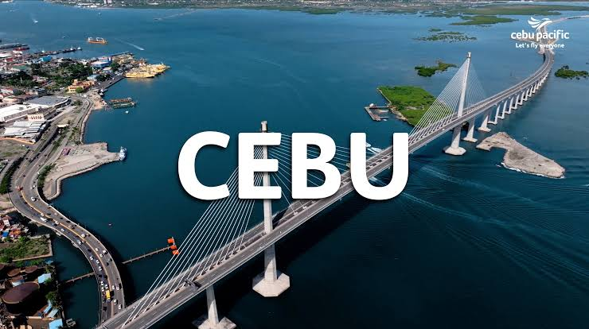
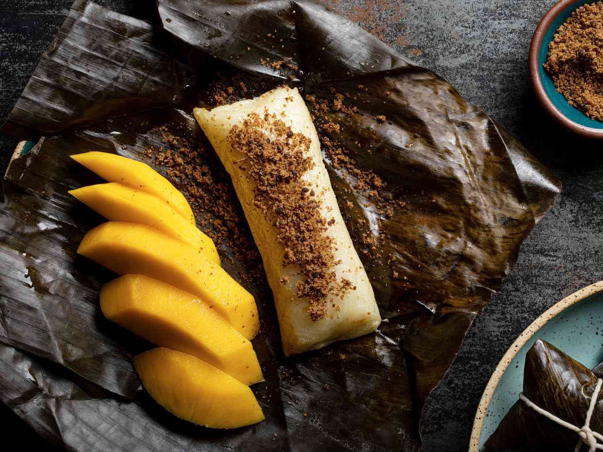
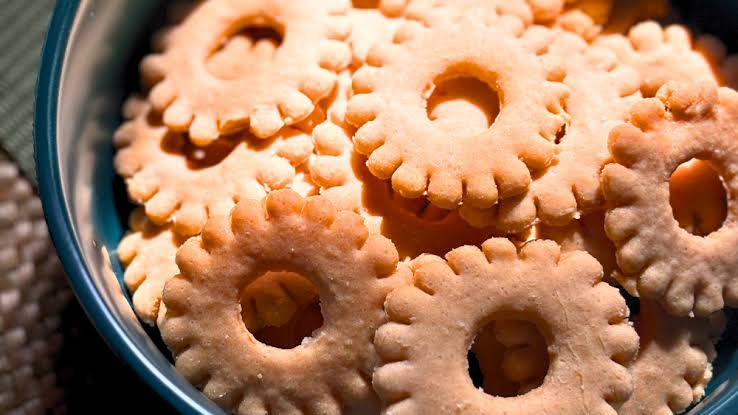

MY CEBU TRAVEL GUIDE
Home |
About |
Places |
Food |
Travel Tips |
Contact
Home

Welcome to My Cebu Travel Guide
Discover the beautiful places, delicious food,
and exciting adventures waiting for you in Cebu!
ABOUT CEBU
Cebu is located in the Central Visayas region of the
Philippines. It has many attractions, including beaches,
waterfalls, gardens, and historical sites. Cebu is also
known for its local food and culture.
PLACES TO VISIT
Learn about each destination and click "Learn More"
to see more pictures on Google Images.
-
Bantayan Island
-
Kawasan Falls
-
Moalboal Sardine Run
-
Sirao Garden
-
Magellan's Cross
-
Bantayan Island

Bantayan Island is a relaxing destination where visitors
can enjoy the beach, clear water, fresh air, and peaceful
surroundings. It is a nice place to spend time with family
or friends.
Learn More
-
Kawasan Falls

Kawasan Falls is surrounded by trees and rocks and is known
for its cool water. It is a refreshing destination for
people who enjoy nature and outdoor activities.
Learn More
-
Moalboal Sardine Run

The Moalboal Sardine Run is an exciting underwater experience
where visitors can see huge groups of sardines moving together.
It is a great attraction for people who enjoy the ocean.
Learn More
-
Sirao Garden

Sirao Garden is a colorful mountain attraction filled with
flowers and decorations. It is a good place to relax, enjoy
the scenery, and take pictures.
Learn More
-
Magellan's Cross

Magellan's Cross is one of Cebu City's well-known historical
attractions. It is a place where visitors can learn more
about an important part of Cebu's history.
Learn More
FOOD TO TRY
- Larang
- Suman
- Leche Flan
- Rosquillos
- Cebu Style BBQ
Larang
Larang is a flavorful fish dish with a savory and slightly
sour soup. It is a good choice for travelers who want to
experience a local Filipino dish.
Suman

Suman is made from rice and is commonly wrapped in banana
leaves. It has a soft texture and mild sweetness and can
be enjoyed as a snack or dessert.
Leche Flan

Leche flan is a creamy Filipino dessert covered with caramel.
Its rich and sweet flavor makes it a popular dessert after
a meal.
Rosquillos

Rosquillos are crunchy ring-shaped biscuits with a light
sweetness. They are easy to bring along and are also a
popular Cebu souvenir.
Cebu Style BBQ

Cebu-style BBQ is grilled meat usually served on sticks.
It has a smoky and savory taste and is a popular choice
for a quick meal or snack.
🌴✨ Travel Tips
-
Plan Your Route
Organize your destinations before traveling so you
can manage your time and avoid unnecessary travel.
-
Prepare Your Budget
Set aside money for transportation, food, activities,
entrance fees, and souvenirs.
-
Pack the Essentials
Bring water, identification, sunscreen, comfortable
clothes, and other useful travel items.
-
Check the Weather
Check the weather before visiting outdoor destinations,
especially beaches and waterfalls.
-
Protect Cebu
Keep tourist spots clean, dispose of trash properly,
and respect the environment and local communities.
Email:
rosalesnico726@gmail.com
Phone:
09193308749
🌴 Thank you for exploring Cebu with us —
MY CEBU TRAVEL GUIDE!